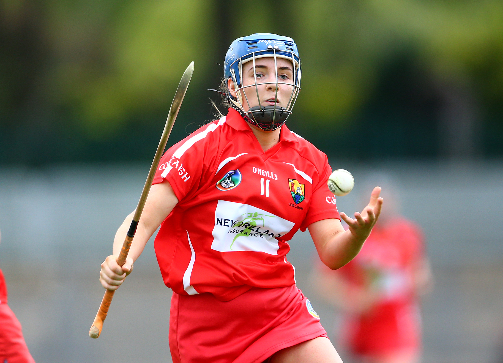
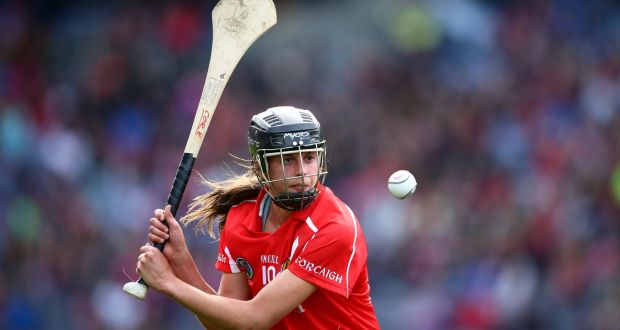

| The History of Camogie | The Camogie Association | 2017 Liberty Insurance Camogie all-stars roundup: |

Camogie is an Irish stick-and-ball team sport played by women.It is almost identical to the game of hurling played by men. Camogie is played by 100,000 women in Ireland and worldwide, largely among Irish communities.It is organised by the Dublin-based Camogie Association or An Cumann Camógaíochta. Founded in 1904, Camogie, an independent voluntary organisation, is the most popular female team sport in Ireland while making a significant contribution to the Irish culture, as part of the family of Gaelic games. There are 537 camogie clubs, of which 513 (95.5%) are based on the island of Ireland, 47 in Connacht (8.8%), 195 in Leinster (36.4%), 160 in Munster (29.8%), and 110 in Ulster (20.5%).
The game consists of 2 thirty-minute halves. There is a half time interval of 10 minutes. In event of extra time halves must consist of 10 minutes each. Each team has 15 players on the field. Within the 15 players the team must consist of 1 goal keeper, 3 full back players, 3 half back players, 2 centre-field players, 3 half forward players and 3 full forward players. There is a minimum requirement of 12 players on the pitch at all times.
A team achieves a score by making the ball go between the goal posts. If the ball goes over the bar for a "point", the team earns 1-point. If the ball goes under the bar for a "goal", the team earns a 3-points.
Within the Gaelic Games family, Camogie is a natural extension of the men's hurling community. The Gaelic Athletic Association (GAA) , as the governing body for men's Gaelic Games and as the community base of Gaelic Games, is of huge importance to Camogie, from club to national level. Its ongoing support, through the generous provision of facilities, finance and other resources, is key to the well being of Camogie.

Máire Ní Chinnéide and Cáit Ní Dhonnchadha, two prominent Irish-language enthusiasts and cultural nationalists, were credited with having created the sport in 1903 with the assistance of Ní Dhonnchadha's scholarly brother Tadhg Ó Donnchadha , who drew up its rules. The Official Launch of Camogie took place with the first public match between Craobh an Chéitinnigh (Keatings branch of the Gaelic League) and Cúchulainns on 17 July at a Feis in Navan. Of all the cultural nationalist organisations for adults that emerged during the fin de siècle, the Gaelic League was the only one to accept female and male members on an equal footing.
In 1932, twenty-eight years following the foundation of the Camogie Association, the first All-Ireland championship was played. The Tailteann Games of 1928 and 1932 whetted the appetite of players for competition of a higher standard than that provided at club level. Ten counties entered for the inaugural All-Ireland championship which was organised on an open draw basis. Mayo man, Seán O’Duffy, donated a silver cup, known as the O’Duffy Cup, for the championship.
The game itself developed considerably over the years. Early exponents concentrated on ground-play. With the result, the majority of scores were goals. Points usually resulted from free-taking. The Dublin teams of the Fifties and Sixties brought teamwork to a very high level and proved unbeatable by sides which neglected this vital aspect of the game. Cork, Kilkenny, Tipperary and Wexford added new skills and innovations and facilitated the evolvement of the game. Higher levels of fitness were required as players wished to run with the ball at every opportunity. The introduction of the fifteen-a-side game brought camogie closer to hurling.
Today’s camogie stars are accomplished athletes, who demonstrate amazing levels of skill, fitness, ball control and technique.
The sport's governing body, the Camogie Association or An Cumann Camógaíochta was founded in 1905 and re-constituted in 1911, 1923 and 1939. Until June 2010 it was known as Cumann Camógaíochta na nGael.
The Camogie Association (Irish: An Cumann Camógaíochta, formerly Irish: Cumann Camógaíochta na nGael) organises and promotes the sport of camogie in Ireland and across the world. The association has close ties with the Gaelic Athletic Association.
The Camogie Association organises All-Ireland Championships at Senior, Intermediate, "Premier Junior", Junior A, Junior B, Minor A, Minor B, and Minor C, and Under-16 A, B and C level. There is an All Ireland Club Championship at senior, intermediate and junior level, a National League an inter-provincial Gael Linn Cup at senior and junior level, inter-collegiate Ashbourne and Purcell cups and a programme of All-Ireland championships at secondary schools senior and junior levels.
Many Camogie players also enjoy other Gaelic sports and The Camogie Association regularly liaises with their respective associations.Providing young women with the opportunity to play Camogie and other Gaelic sports is an integral part of encouraging them to stay with sport though their teenage years and later into life.
| Name | County | Photograph |
|---|---|---|
| Aoife Murray | Cork | |
| Rena Buckley | Cork | |
| Catherine Foley | Kilkenny | |
| Laura Treacy | Cork |  |
| Gemma O'Connor | Cork |  |
| Anne Dalton | Kilkenny | |
| Eimear O'Sullivan | Cork |  |
| Meighan Farrell | Kilkenny | |
| Ashling Thompson | Cork | |
| Katrina Mackey | Cork | |
| Katie Power | Kilkenny | |
| Orla Cotter | Cork |  |
| Ailish O'Reilly | Galway |  |
| Aisling Maher | Dublin | |
| Aoife Donohue | Galway |